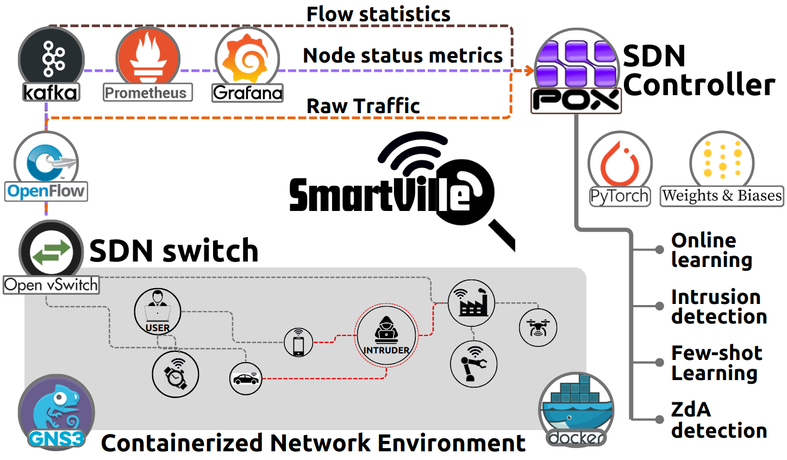
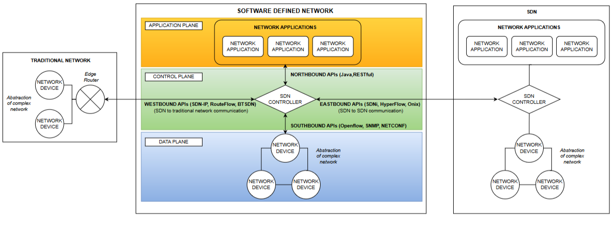
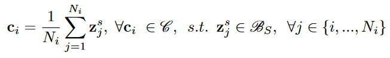
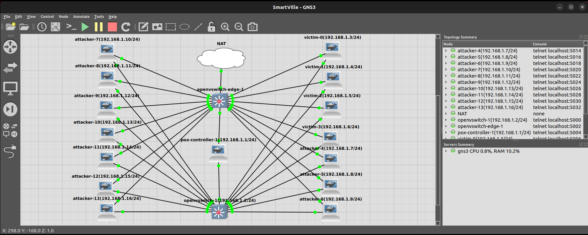
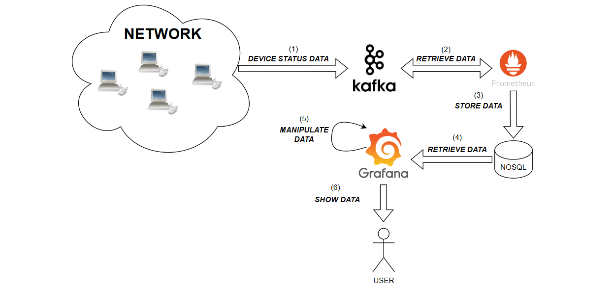
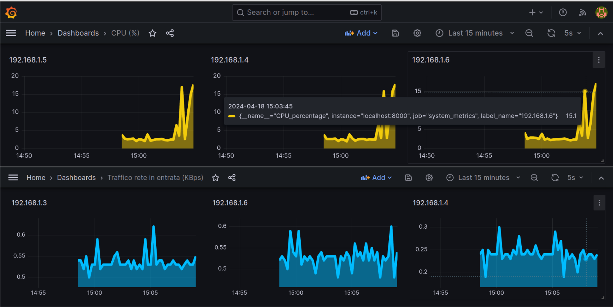
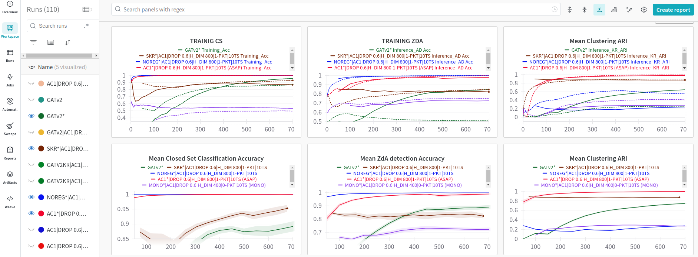

An open-source testbed for training network intrusion-detection systems on live traffic — not pre-recorded traces.
This repository is the working, out-of-the-box implementation behind the paper “SmartVille: An Open-Source Testbed for Online-Learning Intrusion Detection over Software-Defined Networking.” It orchestrates GNS3 network emulation, Docker containers, real traffic replays, a PoX/OpenFlow controller and PyTorch neural modules into a single reproducible sandbox.

Everything the paper describes — the SDN monitoring-and-control loop, the multi-modal feature space, the prototypical online-learning detector, the automatic topology generator and the attack/honeypot catalog — is implemented here as runnable code, Dockerfiles and scripts. The page below maps each contribution of the paper to where it lives in the codebase. See the paper repository →
The overwhelming majority of machine-learning research on network intrusion detection (NID) trains on pre-recorded, hand-labelled traces before release — an inherently offline process that needs bulk pre-processing and careful feature engineering. Yet cyber-threats are open-set and networks drift, so offline-trained detectors age quickly. Online-learning — learning to detect attacks on a live network — is adaptive by design, but fewer than 20% of recent ML-NID papers attempt it. The single biggest reason is the missing ingredient: an accessible, ML-ready network emulation testbed. SmartVille exists to remove that entrance barrier.
The PoX SDN controller embeds few-shot and zero-shot neural modules for data-efficient learning and zero-day-attack detection & categorization, extending a plain layer-3 forwarding switch with ML-based NID.
Contribution 1Raw traffic bytes, OpenFlow flow statistics and node-status probes (CPU / RAM / latency / throughput) are fused. Two visualization strategies ship out of the box: a local Grafana dashboard and cloud logging.
Contribution 2Docker images realistically reproduce recent cyber-attacks and IoT honeypots, running on GNS3. Adding new attacks, protocols or node types is a matter of adding a Dockerfile.
Contribution 3A star_topology script instantiates attackers, victims, switches, a controller and a NAT node as GNS3 appliances — auto-configuring interfaces, IPs, names and behaviours.
A container_manager / dashboard launches attacks, benign traffic, monitoring services and training cycles — from a web GUI or a terminal CLI client.
Weights & Biases logging tracks training/testing metrics, gradients, hyper-parameters and latent-space decompositions for reproducible online-learning experiments.
Contribution 4cSmartVille is built on GNS3, which virtualizes a realistic network scenario. Every node is a custom Docker container bundling its Python dependencies, which makes the node set both extensible and resource-isolated. A single Open vSwitch forwards traffic; a PoX controller observes it through OpenFlow and enriches it with node-status metrics streamed over Kafka. The controller turns those observations into multi-domain feature vectors and trains the neural detector — live.
flowstats / portstats OpenFlow requests, collects the asynchronous responses, and keeps an anonymized copy of the first n packets of each flow.
Each node in the first release is a Docker container built from a versioned Dockerfile. The design is deliberately
duple: the node set is easy to extend, and resource isolation is enhanced. Build them all with a single make all.
Emulate authentic IoT devices by replaying real Aposemat IoT-23 captures. IP addresses are rewritten with Scapy to match the testbed, then sent with TcpReplay to guarantee uniform send/receive pacing. A producer script streams CPU, RAM, ping and traffic metrics to Kafka.
Somfy lock · Philips HUE · Amazon EchoLive-reproduce real attack patterns stored as .pcap files. A rewrite step can bulk-modify endpoint addresses for exact-fidelity replays, or the replay script can rewrite endpoints on the fly. Extend the range of attacks by editing the container.
A modified GNS3 Open vSwitch image. Its boot.sh is patched to listen for a controller on br0 at 192.168.1.1:6633. Behaviour — hub, L2 or L3 switch — is dictated entirely by the PoX controller through flow rules.
The core. A PoX module (extending the sample L3 forwarding switch) that builds multi-domain feature vectors and trains the NID module. It hosts Prometheus + Grafana for the monitoring dashboard and holds the trainable neural modules.
PoX · PyTorch · Prometheus · GrafanaSmartVille advocates for multi-domain feature spaces that widen the visibility of ML modules. All three domains below are collected from a single SDN switch in the first release — but the modular source code lets you extend monitoring to multiple forwarding elements, or to application-level data, using the existing Kafka messaging code.
Periodic Flowstats OpenFlow requests build a sliding-window sequence of per-flow statistics from the switch. Flows are grouped by source and destination IP address. The request period is user-configurable and issued asynchronously.
The raw bytes of the first n packets of each flow feed the pipeline (n is a CLI parameter). IP addresses and transport ports are masked by default so the neural modules can't cheat by memorizing endpoints.
A Psutil-based producer thread streams CPU, RAM and network metrics to Kafka; Prometheus persists them in the controller. A node under attack often shows anomalous resource-usage signatures.
The NID module is designed to be modified, extended or replaced — but the reference implementation embodies four principles drawn straight from the paper. It ships the open-source neural modules of ASAP for closed-set multi-class classification, collective anomaly detection and clustering.
An asynchronous periodic cycle: every i seconds the controller classifies the current multi-modal sliding windows and back-propagates the error. Labelled tuples land in class-specific replay buffers so batch learning can shorten convergence.
No feature selection or hand-engineering. Deep nets extract features directly from raw bytes, flow/port stats and node probes; a trainable batch-normalization layer manages the dimensional heterogeneity of the fused inputs.
A dynamic label encoder adds a new class encoding whenever an unseen label arrives with a sample. Prototypical learning enables few-shot acquisition of new attack definitions from a handful of labelled examples.
Under the open-world assumption, a gradient-based clustering strategy classifies among multiple concurrent unknown behaviours. Three curricula split attacks into known / unknown-train / unknown-test for out-of-distribution experiments.
Instead of a fixed-size output layer, the classifier is a Prototypical Network. Support samples compute a centroid (prototype) per class; a query's logits are inversely proportional to its Euclidean distance from each prototype. Output dimension is therefore dynamic — new attack classes can appear at run-time without retraining from scratch, and each learnt prototype maps to a latent attack signature.

A star_topology script builds a honeypot-and-attacker scenario with a single command. Nodes attach to the Open
vSwitch, which attaches to the controller; a second edge switch links everything to a GNS3 NAT node for Internet access
(needed for cloud logging and for measuring latency as a node feature). The default scenario spins up seven attackers and
seven victims — and it's all driven by the container_manager.

python3 utils/star_topology.py override=acid. Modify the modular script to define
entirely new topologies.
SmartVille pre-packages both a local node-status dashboard and a cloud ML-metrics tracker, so you can watch the network and the learner at the same time.
Producer scripts on the nodes publish CPU, RAM and network metrics to Kafka topics (one per node). The controller consumes them; Prometheus persists the stream into a time-series store; Grafana renders live dashboards. Anomalous patterns in these node-level signals enrich the detector's feature space.



Attack and benign patterns are extracted from the publicly available Aposemat IoT-23 captures and replayed at faithful pacing. Unless noted, flows are filtered by attacker source IP; source/destination IPs and transport ports are masked online before the raw bytes reach the neural modules.
| Pattern | Type | IoT-23 capture | Flows extracted |
|---|---|---|---|
| Hajime | Trojan (Linux exploit) | 9.1 | ~50,000 |
| Hakai | DDoS botnet (Mirai/Gafgyt) | 8.1 | ~12,000 |
| Bashlite | DDoS botnet | 60.1 | ~50,000 |
| Mirai | DDoS botnet (IoT) | 34.1 | ~24,000 |
| Torii | C&C + info-gathering | 20.1 | ~50,000 |
| Muhstik | Worm (Mirai-based) | 3.1 | ~50,000 |
| Okiru | C&C botnet (ARC) | 7.1 | ~50,000 |
| Horizontal Scan | Reconnaissance | 1.1 | ~50,000 |
| C&C HeartBeat | C&C heartbeat | 7.1 | ~1,500 |
| Generic DDoS | DDoS (C&C context) | 7.1 | ~50,000 |
Smart-lock flows from Honeypot 7.1 — reproduced by two nodes in the reference topology.
Smart-LED flows from Honeypot 4.1 — reproduced by one node.
Personal-assistant flows from Honeypot 5.1 — reproduced by one node.
All flow-extraction code is open-sourced alongside the testbed. See the repository's iot23_dataset and data_supply_chain.MD for details.
SmartVille runs on a Linux host with a Docker engine and a GNS3 server. Tested on GNS3 2.2.54 and Python 3.12.3. Full instructions live in the repository README.
# create a .env file next to the README with your Weights & Biases key WANDB_API_KEY=pastehereyourwandbapikey # python deps for the host-side scripts pip install -r requirements.txt
# build every node image (controller, victim, attacker, switch) make all
python3 utils/star_topology.py # or a named profile via Hydra: python3 utils/star_topology.py override=acid
python3 dashboard/dash.py override=acid # open the GUI at http://localhost:7777 — start monitoring, # launch traffic/attacks, and start the training cycle.
# send the Hakai attack to 192.168.1.4 python3 replay.py hakai 192.168.1.4 # start the SmartController PoX component (training) ./pox.py smartController.smartController
smartville.yaml. A terminal-only workflow is available via dashboard/dash_cli.py.
If SmartVille or its ASAP neural modules are useful to your research, a citation is greatly appreciated.
@misc{cevallos2024smartville,
title = {Smartville: an open-source SDN online-intrusion detection testbed},
author = {Cevallos, Jesus and Iannello, Stefano and Grattacaso, Giuseppe
and Rizzardi, Alessandra and Sicari, Sabrina and Coen-Porisini, Alberto},
year = {2024},
url = {https://github.com/DISTA-IoT/smartville}
}
@article{cevallos2024asap,
title = {ASAP: Automatic Synthesis of Attack Prototypes,
an online-learning, end-to-end approach},
author = {Cevallos, Jesus and Rizzardi, Alessandra and Sicari, Sabrina
and Coen-Porisini, Alberto and others},
journal = {Computer Networks},
pages = {110828},
year = {2024},
publisher = {Elsevier}
}